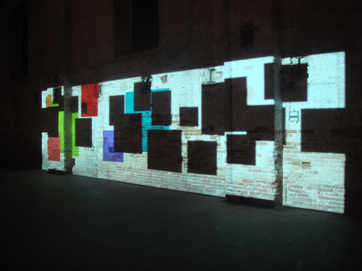
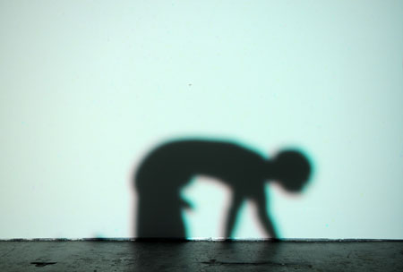
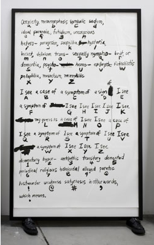
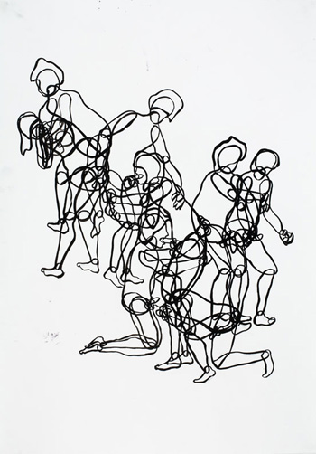

-
Paul Chan’s Sade for Sade’s Sake
by Chris Reitz November 30, 2009
Paul Chan, Sade for Sade
Visitors to Paul Chan’s Sade for Sade’s Sake, the artist’s second solo show at Greene Naftali (on view October 22-December 5) may recognize his latest projected work as a continuation of his exploration of light and shadow in the vein of the 2005-2007 7
Lights. The enormous 5 hour, 45 minute projection at the center of the show features digitally-rendered figures and forms inhabiting a richly-colored, shifting ambient space reminiscent of the projections exhibited in 2007 and 2008 at the Serpentine Gallery and New Museum. Like theLights, which shared the museum floor with black and white studies and music scores, Sade shares the exhibition space with black and white works on paper. However the obvious connections to Chan’s earlier work end there. In contradistinction to his subtle, if haunting, 7Lights, Sade for Sade’s Sake is jarring in its explicit sexuality. Visitors entering the gallery will get a hint of this licentious aesthetic as they walk past a small room of Chan’s line drawings (more on these soon) to make their way to the projected work. But whatever minor acclimatization these drawings offer, the effect of the projected bodies in Chan’s Sade is still arresting. Nearly life-size shadow figures stretch across the gallery’s back wall convulsing and gyrating in a state of orgiastic trance. The gamut of sexual encounter and style is depicted—masturbation, oral sex, bondage, straight sex, gay sex, three-ways, four-ways, rear entry, reverse cowgirl, and what looks it might be pedophilia. However at no point in the course of the projection is it clear if these bodies are engaged in a celebration of sexual liberation or a torturous sexual assault. Their movement oscillates between rhythmic thrusting and psychotic convulsion as they appear standing, sitting, suspended from the ceiling, kneeling on the floor, writhing in groups and shuddering alone.Paul Chan, Sade for Sade
Sade for Sade’s Sake is projected onto the gallery’s entire north wall, a large rectangular surface broken by radiators, columns, and painted-over windows. In combination, the projected images and architectural elements suggest an interior space similar to a prison cell or dungeon. Appropriate, of course, because this new body of work takes the writing of the Marquis de Sade as its starting point, in particular 120 Days of Sodom (for reference the 7Lightswere loosely based on the 7 days of creation in the Judeo-Christian tradition). For Chan as for de Sade the prison cell and the sex dungeon are one and the same. A simultaneous critique and celebration of libertine sexuality is imminently readable in the work, as images of what could be sexual indulgence or violence, transgression or punishment, repeatedly form and dissolve. But despite its explicit and jarring sexual content, Sade for Sade’s Sake is an extremely slow, contemplative work. Like the 7Lights, it does not allow an instantaneous viewing—a fact underscored by the nearly 6 hours it takes for the full arc of the projection to unfold. Throughout this time blocks of shadow and light, like opaque windows, appear in the space of the figures. They change color and slide, slowly, across the wall, offering a steady visual reprieve from the figures’ erratic movements. Toward the end of the video cycle the shadow bodies begin to break down. Still thrusting and convulsing, they start to disintegrate, flickering into their smallest recognizable parts—arms, legs, torsos, penises. Now voided of both the violent and the erotic, these constituent parts act like sexual graphemes, the basic elements of a visual language in which images of both depraved sexual violence and overwhelming carnal ecstasy can be written.Paul Chan, The Body of Oh Romans (truetype font), 2008 via
The linguistic qualities of these disembodied parts are reflected in the gallery’s third room, where rectangular, human-high ink drawings of alphabets and sexually explicit phrases are propped against the walls. These towering ink works, which seem at first like sketches for a perverted ABC book or a Sadian Rosetta stone, are in fact translations of a series of fonts that Chan has made available on his website. Each of these graphic font tables is fixed to a pair of men’s or women’s shoes, and standing in the small exhibition space as tall as the gallery visitors, they appear like a language embodied. The lexical tables surround a single computer keyboard for which the regular keys have been replaced by miniature grave markers. A USB cord runs from the keyboard to a computer in the gallery’s front office, hinting that the keyboard could be used to transmit coded, erotic messages to the gallery staff. Unfortunately the keyboard is not actually connected, and the usb cable is more of a conceptual devise. In order to test Chan’s fonts, visitors must use the more orthodox keyboard plugged into the designated computer in the gallery’s front office.Finally, the last major element in Chan’s show is a series of black ink line drawings. Like the rest of Sade, most of these works on paper are sexually explicit. They depict figures engaged in various sex acts or naked and striking revealing poses. In concert with the slow, almost graceful blocks from the projections, the elegant black lines of these drawings offer a foil to the jarring sexual imagery they depict. Moving from one drawing to the next the lines start to expand over the paper, taking over completely in some cases, and giving the effect of a wholly abstract, almost Brice Marden-esque composition. The line drawings, again, like the projection they accompany, navigate the divide between the erotic and the violent, however in their case this oscillation is perhaps more overtly political. The limp bodies Chan draws piled on top of each other bear a striking resemblance to the American soldiers’ souvenir photographs taken at Abu Ghraib. Likewise, Chan’s contorted, naked figures seem to be posed in “stress positions” reminiscent of the torture techniques used at Abu Ghraib and Guantanamo Bay. In this way the lines that shift between figurative and abstract also shift from aesthetic to political. It’s a line that Chan navigates gracefully throughout his work, and can be found again in the 21 fonts he developed as part of Sade.
Paul Chan, Sarah Jessica Parker, 2009 via
A visit to Chan’s website, which I recommend doing before visiting the show, reveals that not all of the fonts are composed in the voice of Sade’s characters. Though some have titles like Oh Justine and Oh Bishop X, obvious references to Sade’s work, others, like Junior George and Oh Monica, hint at characters from our recent political past. The Clinton/Lewinsky sex acts described in detail in the Star report and the piles of naked bodies in the Abu Ghraib prison photos are written here in the language of Sade. But more than that, Chan’s reduction of sexual excess and violence to basic units of written and visual language runs parallel to the sexual indulgence and violence that constitute the basic elements of contemporary American political/cultural discourse. The shorthand terms “Lewinsky” and “Abu Ghraib” point to the abstraction that high profile cases of sexual indulgence or violence undergo as they become the subtext of the political everyday. In turn, the nightly news broadcasts and family dinner conversations composed in this sexually-loaded shorthand become explicit, indulgent, and violent in their own right. This Sade-itization of the banal is reiterated one last time in Sade in the salacious monologues that the gallery staff will endure daily for the duration of the show. Benign greetings like “hi there” will be translated to “yes yes oh god oh shit yes yes yes hit that yes” (in Oh Juliette), as visitors test out Chan’s fonts on the gallery office computer.
Sade for Sade’s Sake is a significant moment in Paul Chan’s work to date and a considerable follow up to his much-loved Lights. Despite whatever distinctions Chan draws between his political and artistic interventions, Sade offers a complex, endlessly shifting engagement with the erotic and the violent, the banal and the political, the figurative and the abstract. That being said, the political moment that seems most proper to this work has expired—this is no longer the era of Lewinsky-gate or W’s administration. Today the stakes of “sexual transgression” and mediation in the public sphere are more firmly rooted in questions of gay marriage and the legal status of consensual sexual relationships. Given the recent failures of state-level gay marriage referenda, I wonder how, if at all, the line that Chan’s Sade navigates has shifted. Certainly Chan’s interest here lies in the intersection of legal systems, language systems, and sexual practice. These terms collide in the gay marriage debate, which is of course not absent from Chan’s show, but is certainly a more subtle character than Abu Ghraib or Monica Lewinsky.

{kind=link}
{kind=link}
{kind=link}
{kind=link}